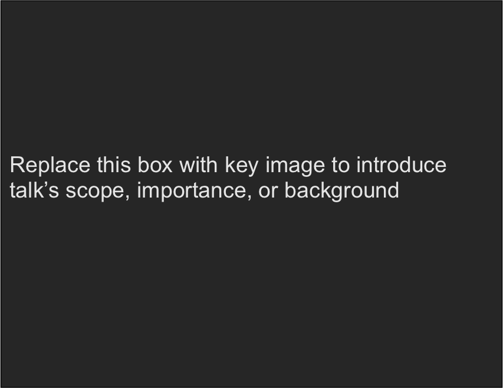
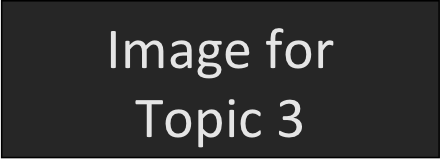
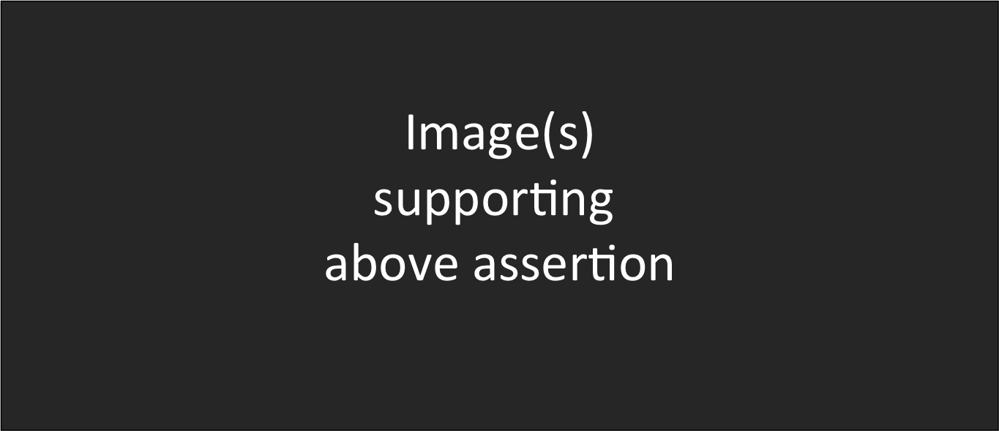
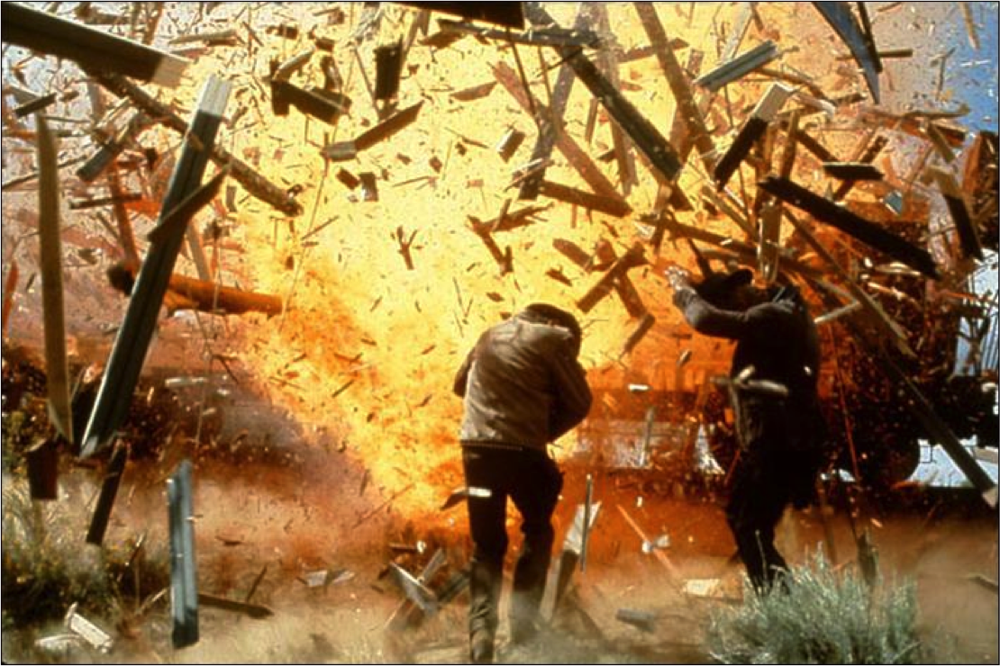

class: center, middle <!-- This DocOnce demo was made by Hans Petter Langtangen <hpl@simula.no>, --> <!-- based on slides and ideas from Michael Alley. --> # Assertion-Evidence Slide Template for Scientific Presentations ###**Michael Alley** at College of Engineering, Pennsylvania State University ### January 24, 2014 .center[<img src="fig-talk/Craft_of_Scientific_Presentations_2nd_cover.png" width=200>] --- # Title of Presentation in Initial Capitals: 36 Points, Calibri Bold Name <br /> Department <br /> <br /> Name <br /> Department <br /> <br /> Logo(s) .center[] --- ## Mapping slide: This presentation focuses on ... (complete sentence, but go no more than two lines) <!-- Here: 3x3 table for three sections in the presentation --> .center[<img src="fig-talk/topic1.png" width=150>] Topic 1 <!-- Empty cell (must have such a comment at least in an empty cell) --> <!-- Empty cell --> <!-- Empty cell --> .center[<img src="fig-talk/topic2.png" width=150>] Topic 2 <!-- Empty cell --> <!-- Empty cell --> <!-- Empty cell --> .center[] Topic 3 --- # Heading for Topic 1 This slide introduces a new section (according to the mapping slide) --- ## Insert ordinary slide title Insert text, figures, lists, ... Note that slide cells are not supported for the Markdown format, so text and figures must be above/below each other, not side by side. --- ## Insert ordinary slide title Here is a 2x2 cell slide with "bullet points" to the left and a figure to the right. <br /> <br /> Item 1 <br /> Item 2 <br /> or even bullet lists (!) * Item 1 * Item 2 --- ## This sentence headline makes an assertion on the first topic in no more than two lines .center[] <!-- Add space --> <br /> <br /> <br /> If necessary, identify key assumption or background for audience - keep to two lines --- ## Fragments quickly outpace the blast wave and become the primary hazard to personnel .center[] --- ## Slides written in markup languages have good support for mathematics and computer code <!-- !bblock makes blocks/frames --> *Mathematics:* $$ F(x) = \int_a^b f(x)dx $$ *Computer code:* ```python import numpy def trapezoidal(f, a, b, n=100): """Integrate f from a to b with 100 intervals.""" x = numpy.linspace(a, b, n+1) F = (b-a)/float(n)*(numpy.sum(f(x)) - 0.5*(f(a) + f(b))) return F ``` --- ## In summary, this sentence headline states the most important assertion of the presentation Supporting point (no more than two lines) <!-- Either bullet list, or vertical space, --> <!-- <linebreak> --> <!-- <linebreak> --> <!-- or down arrow figure --> .center[<img src="fig-talk/down_arrow.png" width=20>] Another supporting point (parallel to the first) <br /> <br /> <!-- !bpop highlight-red --> Questions? .center[<img src="fig-talk/conclusion_image.png" width=450>]